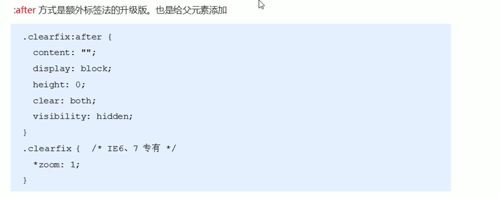

LOCK-LIN
CSS笔记
<style>修改样式，写在<head>中 eg：<style>h3 { color: xxx；(修改字体颜色)（属性值间以；来分割） font-size： 12px；（修改了文字大小为12像素） }
<style>
1.标签选择器（以标签名作为选择器） 语法： 标签名 { 属性1： 属性值1； 属性2： 属性值2； 属性3： 属性值3； ... }
2.类选择器 用class属性调用class类的意思 类选择器口诀: 样式点定义 结构类(class)调用 一个或多个 开发最常用 eg：
<head><style>.red { color: red; }</style></head><body><ul><li class="red">冰雨<li><ul><div class="red">我也想变红色</div>1</body>类命名规则见P67 8分45
使用方式 <div class="red font20">XXX</div>
1.ID选择器 (id选择器的口诀: 样式#定义, 结构id调用, 只能调用一次, 别人切勿使用) 语法： #id名{ 属性1；属性值1; ... } eg： #nav{ color: red; }
2.通配符选择器 语法 *{ 属性1： 属性值1； ... }
3.CSS字体属性 字体系列 使用font-family属性定义文本的字体系列 语法： p {font-family: "微软雅黑"；} div {font-family: Arial,"Microsoft Yahei","微软雅黑“；}
使用font-weight属性定义文本的字体粗细 语法： p { font-weight:bold; }
4.使用font-weight属性定义文本的字体粗细 p { font-style: normal; }
快捷 font:A B C/D E 其中A=font-style（倾斜italic 不倾斜normal） B=font-weight(数字 normal为不加粗，即400) C=font-size（px） D=line-height E=font-family 其中ABD均可省略，会取到默认值，但必须保留C和E属性
表示颜色的三种方法：1.预定义 eg：red，blue 2.十六进制 eg：#FF0000 3.RBG代码(red blue green) eg：（100%，0%，0%）
5.对齐文本 text-align div{ text-align:center; }
6.装饰文本 text-decoration （可用属性还有none overline line-through） div { text-decoration：underline； }
7.text-indent，段落首行缩进(px) div{ text-indent: 10px; }
line-height行间距控制 div { line-height: 26px; }
1.内部样式表 2.行内样式表 直接写在元素标签中 eg：
<div style="color: red; font-size: 12px;">XXXXX<div>3.外部样式表 外面单独建CSS文件 在html页面中映入这个文件<link rel="stylesheet" href="CSS文件路径">
chrome调试工具 右键查看打开，ctrl+滚轮控制代码大小，ctrl+0复原
一.快速生成HTML结构语法 1.生成标签直接按tab 2.快速生成多个，加上*，如div*3 3.父子级标签，用>,比如 ul>li 4.如果有兄弟关系的标签，用+，比如div+p 5.生成带类名或id名字，直接写.demo或者#two tab键就可以了 6.如果生成div名有顺序，可以用自增符号 $ 二.快速生成CSS语法 采用简写形式 如 1.w200+tab 可以生成 width：200px 2.lh26+tab可以生成 line-height：26px
后代选择器 元素1 元素2{样式声明}
子选择器 只能选择作为某元素的最近一级子元素 语法：元素1>元素2{样式声明}
并集选择器 元素1，元素2{样式声明}
伪类选择器
*链接伪类选择器 a:link 选择所有未被访问的链接 a:visited 选择所有已被访问的链接 a:hover 选择鼠标指针位于其上的链接 a:active 选择活动链接（鼠标按下未弹起的链接）
focus伪类选择器 用于选取获得焦点的表单元素 input:focus{ background-color:yellow; }
HTML元素一般分为块元素和行内元素两种类型
块元素特点（如div） 1.自己独占一行 2.高度，宽度,内外边距都可以控制 3.宽度默认是容器（父级宽度）的100% 4.是一个容器及盒子，里面可以放行内或者块级元素 5.文字类元素中不能使用块级元素（如p h）
行内元素 如
<a> <strong> <b> <em> <i> <del> <s> <ins> <u> <span>特点
- 相邻元素在一行上，一行可以显示多个元素
- 高 宽直接设置是无效的
- 默认宽度是其本身内容的宽度
- 行内元素只容纳文本或其他行内元素
注意：
链接中不放a
特殊情况下
<a>中可以放块级元素，但是<a>转换下一级块模式最安全行内块元素 (如
<img/> <input> <td>) 特点：
- 和相邻行内元素（行内块）在一行上，但是他们之间会有空白缝隙，一行可显示多个（行内元素特点）
- 默认宽度是本身内容宽度（行内元素特点）
- 高度，行高，外边距以及内边距都可以控制（块级元素特点)
元素显示模式的转换 元素转换
转换为块元素：display：block； 转换为行内元素：display：inline 转换成行内块：display:inline-block
单行文字垂直居中的代码 解决方案：让文字行高等于盒子的高度，可以让文字在当前盒子垂直居中
背景颜色
background-color:颜色值； 一般情况下默认是transparent（透明），我们也可以手动指定背景颜色为透明色
背景图片
backgroung-image: none | url（地址），写的时候不要忘记url
背景平铺 background-repeat|no-repeat|repeat-x|repeat-y
repeat:背景图像在纵向和横向上平铺 no-repeat:背景图像不平铺 repeat-x:背景图像在横向上平铺 repeat-y:背景图像在纵向上平铺
背景图片的位置 background-position:x y; x坐标和y坐标，可以用方位名词或者精确单位
参数值 说明 length 百分数/由浮点数字和单位标识组成的长度值 position top/center/bottom/left/center/right 方位名词 背景图像的固定 backgroung-attachment:scroll | fixed 可用于制作视差滚动
参数 作用 scroll 背景图像时随对象内容滚动 fixed 背景图像固定 复合写法 background：背景颜色 背景图片地址 背景平铺 背景图像滚动 背景图片位置 （顺序可调换，上述为默认写法）
背景色半透明 background:rgba(0,0,0,0.3)
- 最后一个参数是alpha透明度，取值范围在0到1之间
- 0.3可以写成.3
- 盒子半透明内容不影响
- 只支持IE9+版本浏览器
层叠性
- 样式冲突时，哪个离结构近，就执行哪个样式
- 样式不冲突，不会层叠
继承性
- 可继承text-,font-,line-开头元素与color属性
- 子元素可以继承父元素的行高
- 行高可以不跟单位，如不跟，则表示当前文字大小
*1.5，子元素继承后也会*1.5优先级
- 如选择器相同，执行层叠性
- 如果选择器不同，则按权重
选择器 选择器权重 继承或* 0，0，0，0 元素选择器 0，0，0，1 类选择器，伪类选择器 0，0，1，0 ID选择器 0，1，0，0 行内样式style=“” 1，0，0，0 !important 重要的 无穷大 权重的叠加
复合选择器的权重会叠加
1.border可以设置元素边框，边框有三部分组成：边框宽度，边框样式，边框颜色 语法：border：border-width(粗细) | border-style（样式） | border-color（颜色）
solid 实现边框 dashed 虚线边框 dotted 点线边框
边框简写:border:1px solid red 没有顺序 边框分开写法：border-top:1px solid red(只设置上边框，其余同理)
border-collapse,合并相邻边框(并非单元格) padding-XXX 决定盒子内边距 (padding会撑开盒子，但是如果没设定height和width则不会)
外边距 margin属性用于设置外边距，即控制盒子和盒子之间的距离 外边距典型应用1
嵌套块元素垂直外边距的塌陷
使用下列语句可清除自带内外边距 *{ margin=0 padding=0 }
圆角边框
盒子阴影
设置文字改为text-shadow即可
float属性用于创建浮动框，使其移动到一边，直到右边边缘触及包含块或另一个浮动框边缘
- 语法： 选择器{float：属性值；}
浮动元素的特性 1.浮动元素会脱离标准流
- 脱离标准普通流的控制（浮）移动到指定位置（动）
- 浮动的盒子不再保留原先位置 2.浮动元素会一行内显示并元素顶部对齐 3.浮动的元素会具有行内块元素的特性
浮动元素只影响后面的标准流元素，不影响前面的标准流元素
清除浮动 清除浮动之后,父级就会根据浮动的子盒子自动检测高度.父级有了高度就不会影响下面的标准流了
语法: (clear:属性值;)
清除浮动方法 一.额外标签法(隔墙法)

二.父级添加overflow属性 给父级添加overflow属性，将其属性值设置为hidden，auto或scroll（缺点是无法显示溢出的部分） 三.父级添加after伪元素  四.父级添加双伪元素

定位是为了让盒子可以自由的在某个盒子内移动位置或者固定在屏幕中某个位置，并且可以压住其他盒子
定位=定位模式+边偏移
一.定位模式
二.边偏移
边偏移就是定位的盒子移动到最终位置，有top，bottom，left，right四个属性
静态定位
是元素的默认定位方式，无定位的意思 选择器{position:static;}
相对定位
相对定位是元素在移动位置的时候，相对于其原来的位置而说的 选择器{position:relative} 移动后仍占有原来位置，且是相对于自己原来位置移动的
绝对定位
绝对定位是在元素移动位置的时候，是相对于他的祖先元素来说的 选择器{position:absolute;}
特点： 1.如果没有祖先元素或者祖先元素没有定位，则以浏览器为准定位 2.如果祖先元素有定位(相对，绝对，固定定位)，则以最近一级的有定位祖先元素为参考点移动位置 绝对定位不再占有原来的位置
固定定位fixed
固定定位是元素固定于浏览器可视区的位置。 选择器{position:fixed;}
特点 1.以浏览器的可视窗口为参照点移动元素（即和父元素没有任何关系并且不随滚动条滚动而滚动） 2.固定定位不再占有原先的位置
粘性定位sticky
粘性定位可以看成相对定位和固定定位的混合 选择器{position:sticky;top:10px;}
特点 1.以浏览器的可视窗口为参照点移动元素 2.粘性定位占有原来的位置 3.必须添加top,left,right,bottom其中的一个才有效
定位小结
定位的叠放次序z-index
在使用定位布局时可能会出现盒子重叠的情况，此时可以用z-index来控制盒子的前后次序 语法：选择器{z-index:1;}
1.数值可以是正整数，负数，或者0，默认值是auto，数值越大，盒子越靠上 2.相同属性值后来者居上
display:none（隐藏 隐藏后不保留位置） display:block(显示)
visibility可见性
visibility属性用于指定一个元素可见还是隐藏
visibility:visible:元素可视 visibility:hidden:元素隐藏（visibility隐藏元素后，继续占有原来的位置）
overflow
精灵图（用background-position调整，这里略）
1.下载图标(推荐www.iconfont.cn和icomoon.io) 2.字体图标的引入